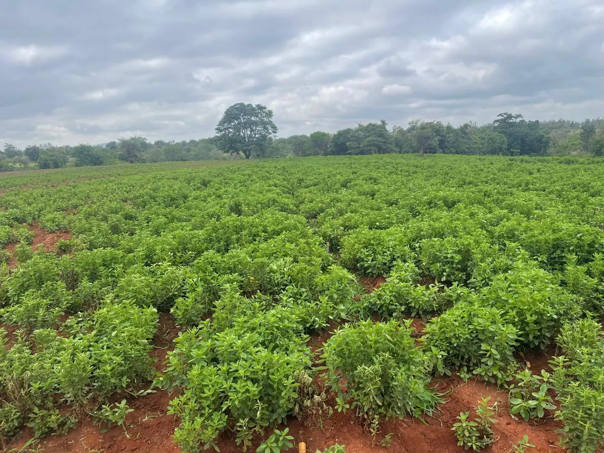
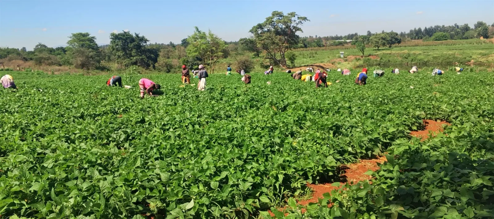
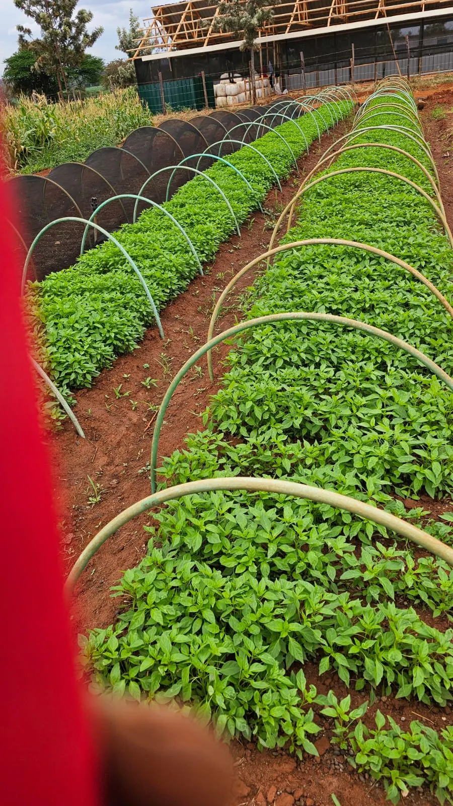
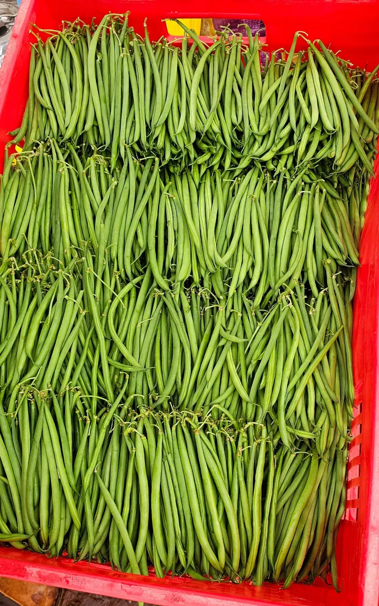
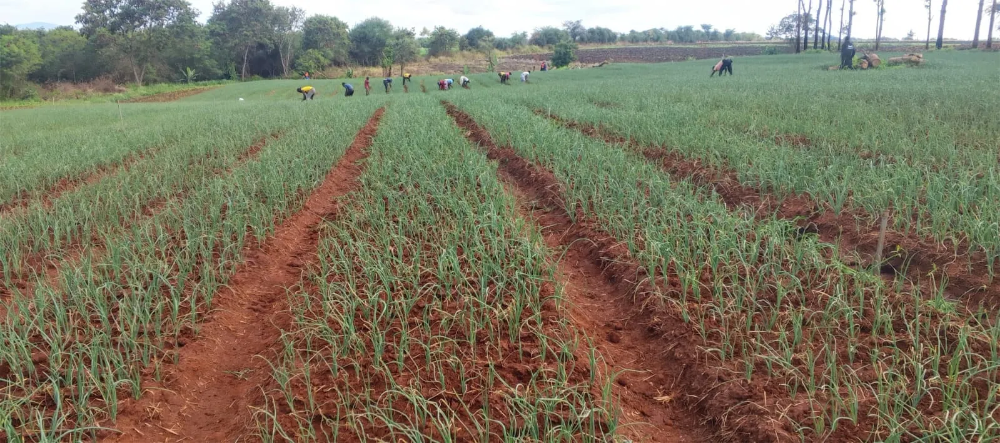
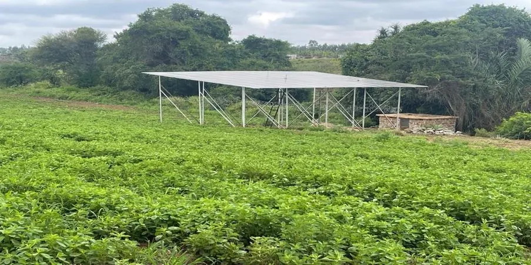
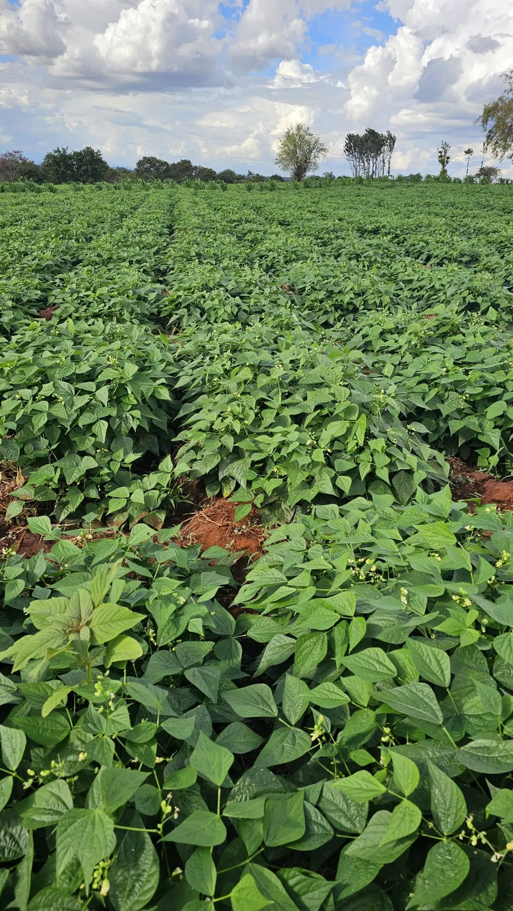
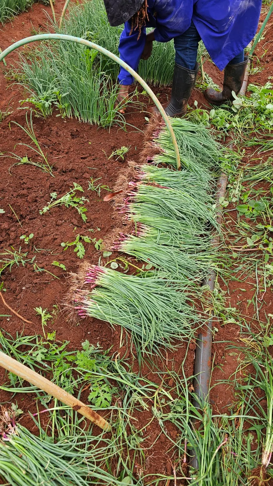

Core production
Stevia
Our core crop: irrigated stevia grown for bulk dried leaf supply under contract.
We are building Kenya’s commercial stevia supply from a 50-acre farm in Embu County. Solar irrigation, careful cultivation and contract-led production support our growing agricultural business.

Farm Base
50-acre farm
Energy Source
Solar Irrigation
Stevia Established
8 acres in 2026
Origin
Embu County, Kenya

Taji Glen Farms Limited was incorporated in October 2025. Our 50-acre leasehold farm in Embu County is developing a commercial stevia production base, with 8 acres established under irrigation in 2026.
Our core business is bulk dried stevia leaf grown for contracted supply. Alongside the farm, we are developing an outgrower model to train and integrate smallholders, with a focus on women and youth.
Solar-powered pumping draws water from the Rupingazi River into an on-farm reservoir. Routine crop scouting, selective harvesting and on-farm organic inputs support our approach to crop management.
Stevia at the core, with nursery and field crops across the farm.
Core production
Our core crop: irrigated stevia grown for bulk dried leaf supply under contract.

Nursery cultivation
Chilli seedlings are raised in nursery beds as part of the farm’s developing crop portfolio.

Field to harvest
French bean cultivation, field care and harvested produce, shown in our farm photographs.

Nursery to field
Onion seedlings and planted fields reflect the hands-on work behind each growing cycle.
Interested in another crop? Discuss your requirements with our team. Garlic is among the high-value crops being considered for future expansion.
Solar irrigation and a farm-to-soil cycle help us make better use of water, energy and organic resources. Maize silage feeds our sheep, and manure and compost support crop production. We are working towards fully organic production; this is a goal, not a certification claim.
A dedicated section of our farm grows high-quality maize specifically as feed.
Our sheep consume the farm-grown fodder, acting as natural processors.
Manure and compost return organic resources to crop production.
Off-grid solar runs the farm’s irrigation. Water comes from the Rupingazi River and an on-farm reservoir.

1050+
Solar Irrigation
50+
Farmers in the Pipeline
Growing
Outgrower Programme
A closer look at our nursery beds, growing fields and harvests.


Farming experience and business development working together.
Director
Commercial farmer leading stevia production and farm strategy.
Business Development Executive
Commercial farmer with experience in county government in Kirinyaga.
Business Development Executive
Ten years of impact investing experience across Africa, MENA and the UK.
Our planned outgrower programme will support training and contracted crop supply, with a focus on women and youth. A pipeline of more than 50 farmers provides a foundation for this next stage.
For stevia supply, crop requirements or business partnerships, speak with Judy Wacheke, Director of Taji Glen Farms.
judymwangi@gmail.com
+254 758 208 960
Embu County, Kenya · Solar-irrigated operations